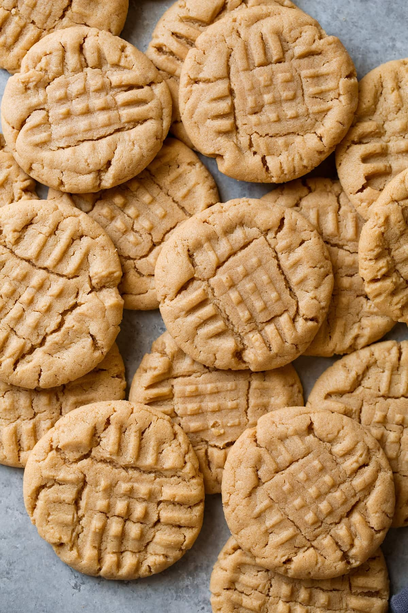

3-Ingredient Peanut Butter Cookies

Picture of 3 ingredient peanut butter cookies
Ingredients
- 1 cup peanut butter
- 1 cup white sugar
- 1 egg
Steps
- Preheat the oven to 350 degrees F (175 degrees C). Line baking sheets with parchment paper.
- Mix peanut butter, white sugar, and egg in a medium bowl until smooth. Roll mixture into 1-inch balls and place 1 inch apart on an ungreased baking sheet; flatten each with a fork, making a criss-cross pattern.
- Bake in the preheated oven until cookies are just barely brown on the bottoms, about 6 to 8 minutes. Cool on the baking sheets briefly before removing to a wire rack to cool completely.